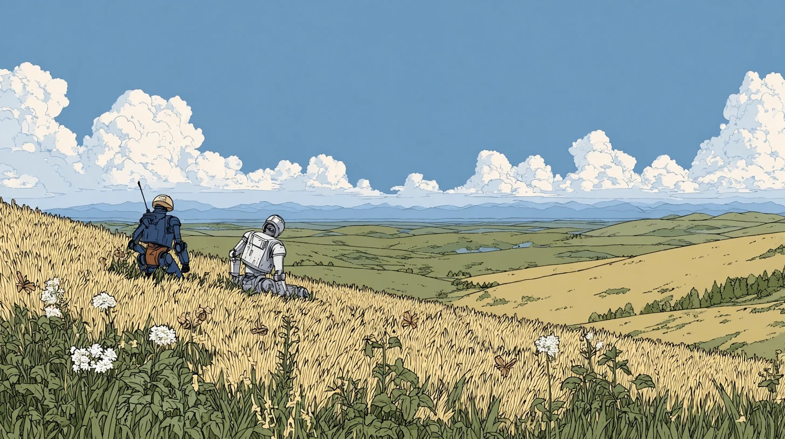
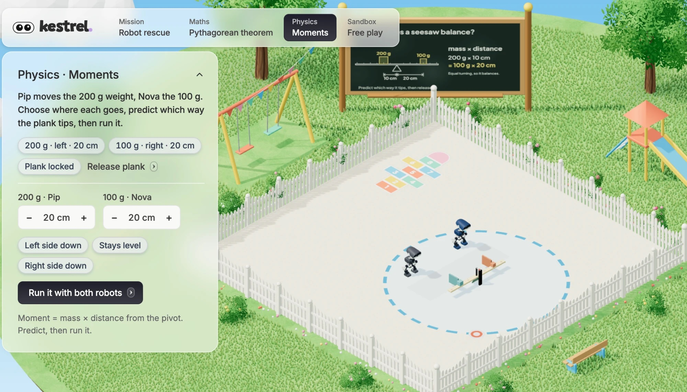
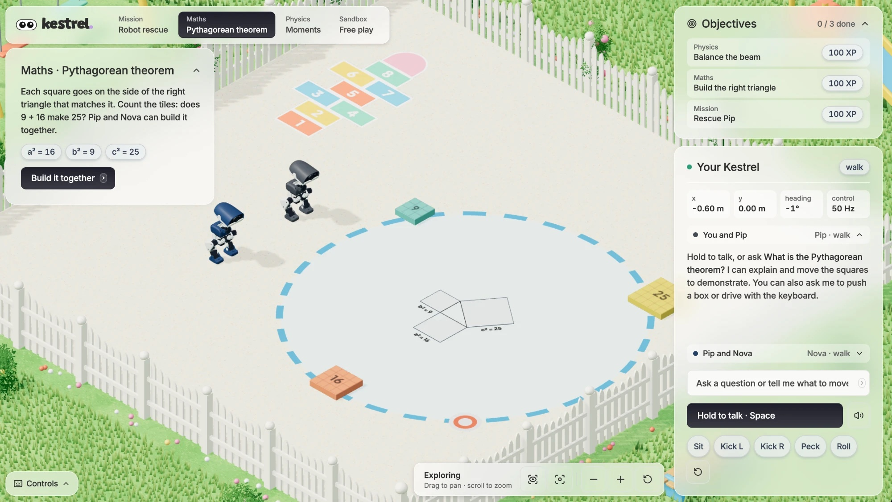
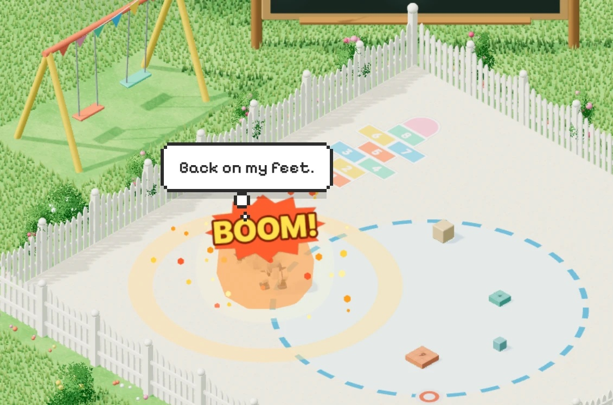
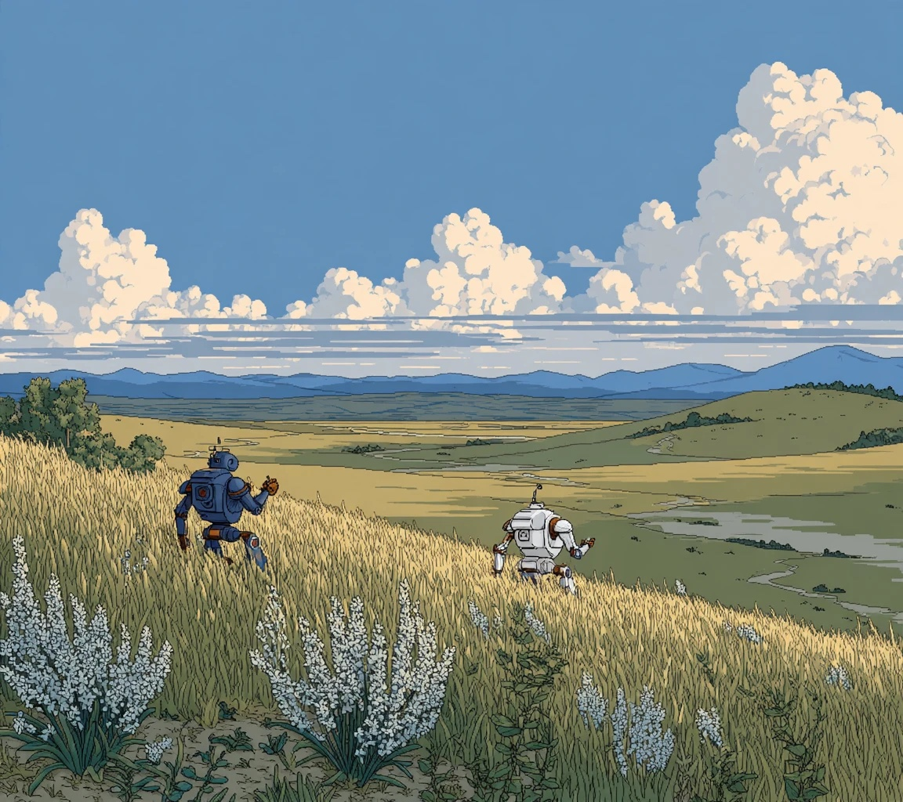

Kestrel is a science and maths playground where you tell Pip and Nova what to try, and the physics answers.
Concept art. The robots in the console are simulated Microducks.
For learners aged 13 to 16. You make the prediction, the simulator measures the result and the robots talk it through with you.
Physics · Moments
Choose where Pip's 200 g and Nova's 100 g go, predict which way the plank tips, then let both robots push their weights into place.
It counts only when the released plank reads level, under 0.5°, for one second.


Maths · Pythagorean theorem
Does 9 + 16 make 25? Pip and Nova push the square tiles onto the sides of a floor triangle, and the slots light up when the tiles land.
Mission · Free play
Guide the robots to bring Pip home. In free play they charge, really collide in MuJoCo, and the one that falls gets back up with its own get-up policy.
The knockdown is a scripted shove. The recovery is the real policy.

Real MuJoCo physics and seven ONNX walking, kicking and get-up policies, in the browser.
Hold to talk. ElevenLabs hears you, Claude on Bedrock plans bounded actions, the robots answer.
Every win is a row in a Tiger Data hypertable, with the measured tilt, so progress survives a refresh.

Ask us for the console and try the beam yourself.
HackPSU 2026 · Concept art